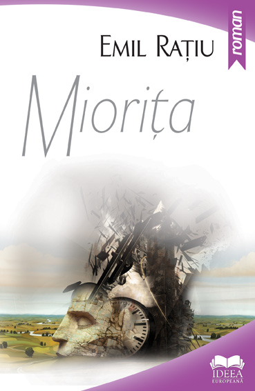

 Emil Rațiu, prin romanul său intitulat Miorița (Editura Europeană, București, 2013, 367 p.), recontextualizează și transferă acest mit fondator al României în care și-a petrecut copilăria și anii de studii, inclusiv ca student al Facultății de medicină generală, în actualitatea autohtonă și internațională dintre anii nouăzeci și două mii, lansând o nouă, fascinantă interpretare originală. Prin gura unui profesor calabrez, romancierul subliniază spiritul pitagoreic concentrat în balada Miorița, căci ce altceva era “nunta de proporții cosmice invocată de protagonist decât o reflexie atotcuprinzătoare a armoniei creației, a vieții și a morții, a participării la ea a celor cinci planete cunoscute atunci.”
În mai toate romanele lui Emil Rațiu, conștiința artistică este dublată de o omniprezentă conștiință civică, spectacolul de idei este dublat de o uimitoare erudiție asupra a ceea ce a însemnat românitatea veterocreștină pretutindeni în lume, evenimentele trăite și acribia documentării bucurându-se de un inimitabil talent al sublimării, al transfigurării în ficțiune. O ficțiune, cea a lui Emil Rațiu, care, ca la cei mai reprezentativi romancieri europeni, purcede de la un mit (să ne amintim de cărțile lui Jean d’Ormesson, Mircea Eliade, Umberto Eco, Nicolae Breban, Milorad Pavic etc.), spre a deveni simultan sau complementar, grație numeroaselor filoane epice și personaje, roman istoric, fanatasy, politic, spy story, detective story, action story, roman de dragoste, roman de moravuri, psihologic, demers filosofic (ontologia Răului, victoria spiritului, privilegiul libertății celor aleși, al căror ideal învinge moartea, o veritabilă diatribă în contra agresiunii universului virtual etc.). Eroii sunt marcați de predestinare, sucubi ai coincidențelor neîntâmplătoare. Nu lipsesc loviturile de teatru și suspense-ul, și nici dicțiunea simbolic-profetică asupra parabolei omenirii în veacul XXI, a se vedea Epilogul. Toate acestea fac ca romanul Miorița să fie citit cu sufletul la gură.
Andrei, personajul-cheie al Mioriței
Așadar, cortina romanului se ridică spre a ni-l prezenta pe Andrei, personajul-cheie al Mioriței, aflat la Sarajevo, în Iugoslavia anilor optzeci, în căutarea românilor și românității, în fond a unei prezumtive Liturghii a Valahilor, a căror existență, credință, civilizație pastorală și limbă încă dăinuie ca o taină indelebilă dar codificată în acele peisaje sau hrisoave din vechi mânăstiri. Vechi manuscrise care fie că dispar, fie că atestă acea Liturghie, fără însă să precizeze locația (sugerată totuși printr-o stranie pentagramă !), fie că pier mistuite de foc, la scurt timp după ce vor fi fost cercetate de eroul nostru.
Andrei face parte din tipologia căutătorilor de adevăr, călăuzit fiind de intuiție pe tot atâtea magice axe ale lumii, depozitare ale Mandalei sau Marelui Mister, în speță ale urmelor lăsate de credința bogomililor în secolele XIV, XV. Credință aflată la originea istoriei spirituale și a românilor, cum ar fi: eterna luptă dintre întuneric și lumină din sufletul nostru, dintre bine și rău, înclinația către hieratism, ascetism sau boicotarea istoriei, către eliberarea din temnița materiei, a cărnii, a tentației luciferine către omuciderea arhetipală săvârșită de Cain care omoară în fiecare clipă pe Abel pe tot întinsul planetei.
Astfel ne putem explica non-violența păstorului mioritic, ce nu răspunde cu răul la rău, cu crima la crimă sau acceptarea morții de către domnitorul Brâncoveanu și cei patru fii ai săi întru salvarea sufletului și a credinței creștine. Mai bine mort decât păgân, ar fi fost ultimele cuvinte ale nicicând subjugatului Domn. De-aici și vocația detectivistă a profesorului Andrei în privința necropolelor bogomile sau a frânturilor de limbă română în vechi manuscrise slavone sau occidentale. Recurge și la tratatele unor mari lingviști italieni dedicate limbilor neolatine, cum ar fi Isaia Graziadio Ascoli, ce-i oferă senzaționala surpriză a unui idiolect român, databil însă... înainte de anul 1000.
În Bosnia Andrei se va întâlni cu Grigore, Grig sau Gregory, un fel de alter ego al său și totodată un opus al său. Fapt e că amândoi sunt prinși într-o rețea internațională de acțiune contra răului în lume, misiunile fiind repartizate de misterioși intermediari americani. Grig, trăitor mai mult în America, nu ezită să-și prevină prietenul, de câțiva ani profesor de limba română la Sarajevo, asupra fixației lui într-un trecut fantomatic și uneori chiar într-o altă realitate, printr-un inexplicabil glissando: la un moment dat acel exil în vremuri revolute poate fi considerat o subversiune într-o lume interesată exclusiv de prezent și n-ar fi exclus să plătească cu viața.
Un roman poliedric
Nu lipsesc, firește, din scriitura romancierului Emil Rațiu lungi digresiuni și incursiuni, lesne de parcurs grație monologului interior sau dialogului îngropat, în istoria civilizațiilor vechi sau mai noi. Un teritoriu unic prin acea inestricabilă sedimentare de rase, nații și credințe reperabile în Balcani, în Bosnia Herțegovina (vechea patrie a bogomililor convertiți apoi la mahomedanism), Dalmația cu cele 12 cătune valahe atestate statal în evul mediu, compunând împreună străvechea Țară a Poljiƈei, cu transhumanța păcurarilor până spre litoralul adriatic, cu istro-românii săi pe cale de dispariție.
Cum spuneam, romanul lui Emil Rațiu este unul poliedric, dovadă fiind destinul basarabeanului Grig în SUA, de jucător la două capete, spion sovietic acreditat la ambasada URSS din SUA, recrutat de serviciile secrete americane, de unde și episoadele spy și policier, dar și de dragoste, legate de patimile întru cucerirea frumoasei, cvasi inaccesibilei actrițe tv Josephine, o necruțătoare material girl. În repertoriul figurilor feminine, la polul opus se află Sara, iubita discretă și jertfelnică a lui Andrei, sau Doina, viitoarea mireasa a lui Andrei, un fel de Maria Magdalena convertită la credință și iubire.
Grig sfârșește prin a cere azil politic în SUA, iar după 1985, odată cu dezghețul promovat la Yalta de Gorbaciov-Bush, pentru a scăpa din acel grand-guignol amoros, devenit și mai pernicios prin moartea violentă a obiectului dorinței numit Josephine și antrenarea lui într-un proces în care va fi implicat ca martor, ocupă un post de profesor de limbă și literatură slavă la Universitatea din Sarajevo, unde îl va fi cunoscut pe Andrei. Acesta era tipul ideal al naivului cruciat, gata să se dueleze cu morile de vânt, să dea curs unei aventuri fără a fie interesat de culisele și adevăratele scopuri nemărturisite. Intuind în altruismul lui Andrei un perfect acord cu acea fantomatică organizație de luptă contra Răului, lui Grig nu-i va fi greu să-l recruteze, sub paravanul unei misiuni umanitare, spre a efectua de fapt un transport de arme via Elveția, destinate mișcărilor de gherilă din lume.
Odată întors în SUA spre a depune mărturie la proces, Grig, eroul ce se livrează fatalității, trece brusc printr-o metamorfoză ce face din el un alt om, complet opus celui din discuțiile cu Andrei. Va fi contactat de fosta sa legătură din CIA, John, care-l pune la curent cu ce va să urmeze în lume.
Andrei, la rândul său, are un trecut inavuabil, poartă în ființa lui amintirea unei structuri bipolare, a unei duble personalități. În prima tinerețe, ca ofițer de securitate primește misiunea de a reprima, în acei ani ai genocidului stalinisto-comunist din România, rezistența anticomunistă din munții Făgăraș în frunte cu căpetenia ei, nu altul decât întruchiparea păcurarului mioritic înveșmântat în straiele lui albe. Ritualica figură a acestuia îl va obseda toată viața, până a se identifica cu propria victimă. Întors după 1990 în satul cu pricina printr-un concurs de împrejurări, și printr-o coincidență neîntâmplătoare semănând la față cu Ion Păstorul, cel ucis illo tempore, oamenii vor spune că orficul Păcurar mioritic, Ion Lepșe, a înviat, e oleacă mai bătrân dar el e sută-n mie, prea joacă frumos în hora în care s-a prins. Dar să nu anticipăm.
Românitatea din Istria
Pagini cu adevărat unice sunt cele dedicate de Emil Rațiu românilor și românității din Istria, prin portretizarea unor locuri ce par bătute cu piciorul de romancier, luxul amănuntelor fiind de-a dreptul miraculos. Întorcându-se din misiunea sa în Elveția, Andrei trece de Fiume, iese din autostradă și ajunge la Sușnevița (odinioară numită Valdarsa). Coboară din mașină, respiră aerul tare al muntelui din fața sa, al colinei pe care se înălța turla albă a unei biserici. Are senzația de dèjà vu, ca și cum ar fi descins în Țara Bârsei sau a Hațegului, inducându-i în chip reflex senzația că nimerise pe-o gură de rai, pe-un picior de plai. La circa o sută de metri începeau casele, case de piatră, cu obloane la geamuri, unele bătute în cuie, semn că sunt pustii. Mirajul devenea dezolare. Este întâmpinat de câteva bătrâne, “măicuță bătrână/ cu brâul de lână”, ce își așteptau fiii plecați care încotro, la oraș, sau în alte țări cum ar fi România, Italia, Eveția, Germania, America, Canada sau Australia. Vorbește cu ele în limba română, le află drama și singurătatea pricinuită de istoria postbelică ce a schimbat granițele. Ajunge la clădirea din centru: după aerul ei oficial, stilul arhitectonic mussolinian nu putea fi decât fosta primăriii înființată în 1921. Primar fusese marele patriot Andrei Glavina. Așezările Sușnevița și celălalt nucleu istro-român, Jeiãn, despărțite de Monte Maggiore, deveniseră sate ale amintirilor. Copiii de prin anii șaizeci încă vorbeau dialectul neolatin al părinților, fără să știe limba oficială a statului. La școală însă li s-a impus sârbo-croata. “Era drama tuturor populațiilor românești, deznaționalizate de către Greci și vecinii Slavi”, își spuse Andrei. A doua zi ajunge de-a lungul unui codru, în Jeian, sat așezat într-o poiană, locuit odinioară de cărbunari și haiduci. Climatului mediteranean din Sușnevița-Valdarsa i se substituie unul gotic, germanic. Dar și aici este poftit și omenit în casa unei bătrâne care își deapănă povestea ei și cu care se înțelege perfect în românește. Este îndrumat să stea de vorbă cu un octogenar spre a lua pulsul păstrării limbii române numite de cei câțiva locuitori vlașki sau jeianski. Află cu mirare că război se spune oste-oaste, un termen pe care nicio altă limbă romanică nu-l păstrase. Dacă satul îi va lăsa impresia unei civilizații dispărute, moarte, cimitirul acestuia era însă viu. Îngrijit, curat, candelele ardeau, florile străluceau. Ca o epifanie a sacrului. Mai rămăseseră în sat, în chip miraculos, bătrânul clopotar, sora lui și fiica acesteia, o femeie încă tânără, genius locis, care cânta venind spre casă: erau cuvinte românești, dar “o română arhaică, uitată de veacuri”. (...) Ei erau ultimii sacerdoți ai acelui neam ce se stinsese, tânăra, fără să o știe, era ultima vestală ce încă-i ținea aprins focul. Era o durere cosmică a unei lumi care pierea”.
Trăind alternativ clipe de sublimă ieșire din sine, de uitare ca într-o eminesciană insulă a lui Euthanasius, din care este smuls de emisarii realului secularizat, Andrei este entuziasmat și totodată cu inima grea de vestea că majoritatea regimurilor socialiste se prăbușesc ca niște piese de domino, cu excepția României, ajunge la Reggio Calabria, și apoi la Crotone (orașul de unde fusese alungat Pitagora ca eretic vs filosofia oficială!) unde ar fi avut loc Congresul, un prilej neasemuit pentru romancier de a-și exprima prin gura vorbitorilor o sinteză a crezului său politico-filosofic în general, dar mai ales cel legat de prăbușirea totalitarismului, inclusiv a regimului ceaușist în România. Furtuna dezlănțuită în Estul Europei este departe de a fi triumful Revoluției franceze din 1789, dimpotrivă este victoria împotriva Terorii Istoriei, declanșate în acel an, duse la extrem în 1917, este victoria împotriva falimentului modernității. Evenimentele de o asemenea anvergură înseamnă redobândirea propriului suflet expropriat, a propriei individualități din menghina falselor crezuri clamate la 1879, preluate apoi de rafinata barbarie supertehnologică a reificării omului și înlănțuirii lui în contingent. Postmodernitatea proclamă moartea esenței, a acelei aletheia eleate a lui Parmenide, abolită prin contagiul temporalității, prin relativizarea extremă a valorilor, prin recurs la aparențele înșelătoare numite și virtuale, bune conducătoare de narcisism, anomie, debusolare, dezînsuflețire, autodistrugere ireversibilă.
Un mister orfic
Contele calabrez pune în scenă pentru participanți un mister orfic, al cărui protagonist este Păstorul mioritic sau Orfeu. Acesta va sfârși, cum se știe, sfâșiat de gloata chtonică a menadelor, echivalent al răstignirii Mântuitorului dorite de gloata supusă lui Baraba. Reprezentația oferită de contele calabrez imaginează odată cu funeraliile Păstorului, funeraliile Revelației prin Creație și Sacralitate, pângărirea și moartea noumenului în numele fenomenului, al efemerului, triumful consumismului, al satului global. Finalul însă, ca într-un fel de katharsis răstoarnă acea cacofonică, babelică corupție: Păstorul se metamorfozează în Luceafărul eminescian ce răscumpără Omul, inducându-i în locul cunoașterii dionisiace, cunoașterea paradisiacă, puritatea, neprihănirea; păcurarul Mioriței “va învinge răul prin bine, moartea prin moarte, nesupunându-i-se și neopunându-i-se”, totul sub semnul de recunoaștere pitagoreic: pentagrama, un cod misterios, în formă de stea, steaua cea bună ce-l urmărise de fapt decenii în șir. Finalul scenariului este și un posibil epilog al căutărilor lui Andrei. Pierderea plicului sigilat nu este întâmplătoare, este o dezlegare a lui Andrei de o lume străină lui, subjugată de secularizare și putere lumească.
În hipogeul în care fusese călăuzit la Crotone, Andrei îl reîntâlnise pe păstor, hăituit pe acea gură de rai de miliția și securitatea regimului “popular” și pe care el îl ucisese în poiana din munți. De-atunci viața lui nu mai fusese decât o continuă expiere și căutare, o tentativă de mântuire prin cunoaștere pe căile inimii, o luare aminte la jertfele succesive din istoria românilor. În Bosnia este pătruns de învățătura bogomililor atât de apropiată de cea pitagoreică. Tot acolo îl cunoscuse deloc întâmplător pe contele calabrez, Virgilio, căruia, acum, i se destăinuia. Acesta va ajunge la biblioteca secretă a Vaticanului unde va avea șansa să consulte un manuscris din secolul al XII-lea, recent sosit de la o mânăstire franciscană din Bosnia și aflat sub pecetea pentagramei pitagoreice. Scris în langue d’oc, limba trubadurilor provensali, limbă a armoniei universale a pitagoreicilor, era un codex de îndreptări morale și religioase, avându-l în centru pe Păstorul balcanic, păstrător al tradiției prin soun visage de lus, dou Segnour, lou fils dou home, lou fils dou Segnour. Era perpetua încleștare dintre chipul omului sigilat de pecetea Luminii și Spiritului și chipul Potrivnicului soun Countrariou, al lui Cain, purtând pecetea Fiarei biblice. Păstorul, pentru a-și apăra chipul de lumină, alesese comuniunea cu “Mireasa lumii”, ca în balada Miorița, își spuse emoționat profesorul calabrez. Expert în limbile neolatine, a recunoscut fragmente de limbă română, ce-i drept străvechi: a nuntiae mele au fost caduta steua. Profesorul exultă, da, era Păstorul mioritic și mesajul său cosmic, al desprinderii de materie spre stele făclii… o veritabilă comuniune și cânt franciscan al creaturilor. Al morții jertfelnice și Învierii cristice.
Pagini unice, vibrante transcriu pledoaria profesorului calabrez, un alter ego al romancierului. Acesta este primit de cardinalul Ratzinger pe care îl imploră în privința salvgardării acelui manuscris și publicarea lui. S-ar fi înfăptuit astfel salvarea simbolică a Păstorului mioritic, și implicit a lumii creștine. Virgilio trece cu bine și de întâlnirea cu controversatul monsenior Alberti, destinatar al plicului sigilat pierdut de Andrei și deținut acum de conte. Simte în fine că acel răvaș e purtător de rău și-l pune pe foc. Dezlegarea de o lume luciferină își urma cursul, și implicit de acea intrigă polițistă de la Vatican, țesută din elemente precum cenotaful de la Basilica Sf. Apollinaire, documentul de la Malta, dispariția adolescentei Emanuela Orlandi, amplu relatată de presa italiană, și nici până astăzi descifrată, și Asociația de luptă contra răului, din care făcea parte inclusiv – lovitură de teatru! – monseniorul Alberti.
Partea a doua a romanului: evenimentele din decembrie 1989
În acest timp, în România, la Timișoara, Iași, Brașov, Cluj, București, Păstorul mioritic, cel cu mii de fețe împrumutate tinerilor, majoritatea anonimi, se jertfea, pentru a câta oară?, în ziua solstițiului de 20 spre 21 decembrie 1989, în Capitală, zi care va să separe o eră de alta. Așadar, în partea a doua a romanului, dedicată evenimentelor din decembrie 1989, Emil Rațiu aduce în stradă Istoria, ceas de ceas, stradă cu stradă, focalizând cu precădere Capitala. Episoadele de curaj neasemuit ale manifestanților, de mobilizare, protest și sacrificiu, de proclamare a dorințelor înăbușite vreme de cinci decenii, precum libertatea și demnitatea. Din zeci de mii de piepturi se cere abolirea comunismului ca ceva străin națiunii române, respectarea drepturilor elementare ale omului, între care dreptul de liberă circulație. Simultan se perindă scenele de reprimare sângeroasă, de panică, lașitate și cruzime vindicativă, teroristă, criminală a forțelor securisto-milițienești în frunte cu cuplul dictatorial. Zeci de pagini de document viu, trăit ca o revelație inclusiv de Andrei. Revenit în țară cu trenul via Bari, Trieste, Belgrad, Timișoara, ajunge în Capitală, reușind să găsească un pat la un hotel din jurul Gării de Nord. Colindă Bucureștiul, din Berzei până la dealul Mitropoliei și Casa Poporului, vede și aude aproape tot, străzi, case, graffitti, aprinde o lumânare în scuarul din Piața Universității, locul simbolic unde fuseseră striviți sub tanchete sau împușcați protestatarii înarmați cu flori, steaguri din care decupaseră stema comunismului și cu credința în non-violența lui Abel. Andrei merge în strada Sfinții Apostoli, pe-atunci încă sediul Securității ocupat de revoluționari și cere voie să-și găsească dosarul. Răsfoiește în grabă dosarul “Sâmbata de Sus, raionul Făgăraș, bandă armată” în care, din păcate, avusese un rol decisiv, acum însă părându-i-se de pe altă lume, el însuși fiind alt om. Vrea totuși să-și afle propriile date biografice ce-ar fi putut explica fie și parțial misterul acelui Andrei de odinioară. Pe lângă fișele acuzaților, martorilor etc., căutător de-o viață al adevărului, găsește și o fișă ce consemnează că el, încredințat de maică-sa venită de la țară la un leagăn, fusese înfiat de un muncitor comunist. Ceea ce explica totul.
Sentimentele contradictorii prin care trece, între vis, coșmar și trezie, între trecut și prezent cu caruselul lor de figuri și evenimente, sunt o probă de analiză psihologică și un eșantion de ars narrativa de mare altitudine ce consacră definitiv un romancier (pp. 259-262). Ex-ofițerul de securitate Andrei Olaru, datorită asemănării izbitoare cu căpetenia luptătorilor anticomuniști din Făgăraș, sporită de deghizarea lui în straiele păstorului, este capturat și anchetat ca Ion Lepșe, deși acesta fusese ucis de bravul și tânărul ofițer. În ciuda protestelor justificate, Andrei este întemnițat la Jilava. Viața i se sudase în chip straniu cu cea a păcurarului pe care el îl ucisese în poiana din munții Făgăraș. Moartea baciului Ion Lepșe va fi trauma vieții lui Andrei. După câteva luni însă zbirii comuniști își dau seama că straniul deținut nu era altul decât vajnicul ofițer Andrei Olaru. Odată eliberat și pensionat pe motive psihiatrice tip dromomanie impulsivă, Andrei conștientizează pierderea identității: cine era, cărei țări, localități sau familii aparține? În cele din urmă realizează că destinul lui interferează ireversibil cu cel al păstorului Ion Lepșe, că viața lui întreagă a fost o continuă dispută între Cain și Abel, acum, în fine, decisiv fiind triumful lui Abel, al păcurarului mioritic.
Captivanta intrigă romanescă țesută de Emil Rațiu nu se va opri aici, căci iată, Andrei, voind să doneze sânge pentru răniții în Revoluție, ajunge la spitalul de pe strada Viting. Tocmai era nevoie de o transfuzie de sânge dintr-o grupă rarissimă. Coincidența, din nou neîntâmplătoare face ca sângele lui Andrei să fie compatibil cu cel al pacientului, nu altul decât Pavel, fostul ajutor al Păcurarului Ion Lepșe din Făgăraș. Aparținătorii ce-l însoțiseră nu știu cum să-i mulțumească, văzând în el o fantasmă a neuitatului Ion Lepșe. Prin urmare viața lui Andrei va fi o Înviere mereu amânată.
Din același gherghef romanesc face parte și reîntâlnirea lui Andrei cu fosta sa iubită din tinerețe, Doina, precum și întoarcerea în satul din Făgăraș la mama păcurarului ucis, Dochia, încă în viață, un fel de Maica Domnului ce-și aștepta Fiul. În chip cu totul neașteptat aceasta plânge și grăiește limpede cu versurile baladei Miorița. Și fiindcă era echinocțiul de primăvară, sătenii încing o horă, în care se prinde și Andrei în straie adecvate. Din nou mulțimea îl ia drept Ion Păstorul ce înviase, de vreme ce Revoluția însăși fusese ca o Înviere a unei națiunii sub semnul lui Isus cel înviat din morți.
Așa cum anticipam, ex-cetățeanul sovietic Grigore, pe fondul Revoluției din România, se dezleagă de toate acele relații duplicitare din State cu senzația că anii petrecuți acolo fuseseră un fel de traversare a pustiului, și se întoarce și el la București. Își ia cetățenie română și deschide aici o reprezentanță a unei importante bănci canadiene. Este convins că fusese o unealtă a destinului într-o țară ce promova nu doar apologia banului, ci și un fel de religie a neantului compatibilă cu omul nou american îndoctrinat cu spoturile consumismului și ale exaltării virtualului: o lume devenită o bursă de valori, la care se juca acel materialist și amăgitor american dream. Dat fiind contextul favorabil din țară, de libertate și frenezie a acaparării, el, care avusese experiența comunismului dar și a capitalismului, se lasă dus de propria pasiune de jucător la risc, lansându-se în speculații financiare și imobiliare, pătrunde în anturajul îmbogățiților de război, cum se spune, foști securiști sau aparatnici reciclați în prosperi oameni de afaceri cu orice. Astfel îl cunoaște pe Serafim, un tip ce profită de tot ce-i cade în mână, un cinic teoretician al acumulării primitive de capital și bunuri imobile, un geniu al răului, cum observă chiar Grigore, contaminat la rândul său de senzația de atotputernicie indusă de câștigul fără limite, de febra capitalizării banului.
Acest anturaj de prosperi oameni de afaceri privesc cu ură și dispreț ceea ce se va numi fenomenul Piața Universității de după alegerea președintelui României din mai 1990: tineri și tinere, în mare parte studenți, conduși de Marian Munteanu, blocând intersecția respectivă, locuind în corturi și protestând fără a se deda la acte de violență. Un occupy street și un laborator urban de democrație, muzică, poezie și rugăciuni împotriva pericolului perpetuării comunismului în Palatele Puterii, drept care golanii erau învinuiți de toate relele lumii începând cu mercenariatul în slujba Opoziției, de trafic de droguri, și terminând cu proxenetismul sau promiscuitatea trădării de țară prin declarațiile făcute presei străine. Grigore însă, deja prosper om de afaceri, e tot mai îngrijorat însă de subitele crize de slăbiciune și vertijuri, drept care în urma unui set de analize află verdictul: leucemie. Fusese radiat de legătura sa din SUA. Totul se prăbușește în jurul lui într-o clipă, în picioare rămâne doar Adevărul ultim. Viața sau moartea. Se va interna într-o clinică din străinătate…
Andrei, nume nici el întâmplător, și nici Pavel, supunându-și prin pana romancierului, firește, trecutul și prezentul vieții unei explorări profunde, se va lăsa dominat de o neostoită dorință de eliberare și primenire pe măsura acelui nou, nesperat început de Istorie datorat celor 1200 de morți și miilor de răniți în Revoluția Română. Aflându-se în căutarea unui centru al ființei, a rădăcinii logocentrice, transcendente, rezistă oricăror tentații și tentacule întinse de noii îmbogățiți, tip duplicitarul Serafim & anturajul, adepți ai satului global și ai multinaționalelor în vădit contrast cu paseistul Andrei. Reacția acestuia nu se lasă așteptată: zădărnicește planul lui Serafim & C de demolare a satului lui Ion Lepșe, solidarizându-se cu consătenii acestuia ce vor să ridice pe locul execuției o biserică.
Însuflețit de nostalgia lui de căpătâi, cea a Păstorului ce se resemnează în fața Răului și Crimei în numele Jerfei, a Morții zămislitoare de Viață și a Binelui (metafora centrală a romanului!!!) îi propune Doinei, a cărei viață amintește, păstrând proporțiile, de metamorfoza Mariei din Magdala, taina cununiei, a iubirii, a transfigurării, a nunții (cu ea sau cu sine... însuși?) care să-i lege și să-i mântuie de păcat. Ne aflăm chiar în a doua zi de iunie 1990, după spulberarea Pieții Universițății de poliție. Alaiul de nuntă pornește din calea Șerban Vodă și ajunge în perimetrul vechii Curți Domnești, se apropie de biserica din preajma Hanului lui Manuc. Dar ca din pământ apare o coloană de mineri gata să atace una de tineri ce clamează “Jos comunismul”. Alaiul de trăsuri se oprește, strada fiind blocată de mineri. Un glonț rătăcit, tras în aer, ricoșează și-l străpunge pe mire. Andrei află în fine chipul Păstorului scufundat în genune. Descătușarea, dezlegarea și totodată contopirea cu Ion Lepșe, în lumină din lumină au loc. Eliberare și expiere.
Romancierul putea pune punct, ceea ce nu se întâmplă, căci urmează un Epilog, un fel de Walpurgisnacht stilistic, mod pe care îl vom întâlni și în romanul în limba italiană Gli straordinari viaggi di Orfeo. Andrei, aflat de-acum în posesia cifrului timpului, își recapătă tinerețea și face o călătorie post-mortem sub Casa Poporului ce îngropase o neasemuită rețea de străzi, clădiri și oameni, altfel spus, Bucureștiul vechi, pentru care romancierul are o pasiune aproape științifică. Lumea timpurilor revolute continuă să ființeze, paralel cu cea de deasupra a anilor nouăzeci. Tărâmurile și timpurile interferează diacronic și sincronic. Așa se face că îl reîntâlnește pe profesorul calabrez venit să vadă Revoluția în direct; ținuse chiar o cuvântare de la balconul Universității.
Încheiem acest lung comentariu cu concluzia profesorului italian, nu alta decât vocea emblematică a romancierului Emil Rațiu: “Revoluția română a fost o întoarcere la origini, contra terorii istoriei! Toate revoluțiile au biruit și s-au impus în lume prin libertatea interioară a sacrificiului... (...) Acestea sunt valori, valori care se trag dintr-aceea a Mioriței... (...) Libertatea adevărată este libertatea de moarte, a Mioriței... este libertatea Revoluției române contra tiraniei istoriei! Nu este libertatea lui Raskolnikov, a omului nou, clonă inventată de comuniști, și nici a Supraomului lui Nietzsche”.
Geo Vasile
September 1, 2015
© 2015 Orizonturi culturale italo-române | Orizzonti Culturali Italo-Romeni